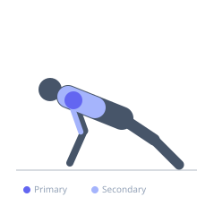

Exercise guide / Deficit Handstand Push-Up
Deficit Handstand Push-Up
The deficit handstand push-up places the hands on elevated surfaces (parallettes, blocks, or plates) to allow the head to descend below hand level, dramatically increasing the range of motion compared to a standard wall HSPU. The greater depth significantly increases the stretch placed on the anterior deltoid and upper pectoralis, and demands substantially more shoulder strength and stability through the extended range.
Primary muscles
deltoid anterior
deltoid lateral
Secondary muscles
triceps brachii
trapezius upper
Stabilizers
erector spinae
Equipment


Starting position
- Place parallettes, yoga blocks, or stable elevated surfaces at appropriate hand positions. Kick to a handstand against a wall with hands on the elevated surface. Hands at shoulder width or slightly wider.
Setup
- Elevation of 10-20 cm is a typical starting deficit. Ensure the elevated surfaces are stable and non-slip before loading.
Steps
- Step 1: Kick up to a handstand with hands on elevated surfaces.
- Step 2: Lower the head below hand level — the degree of descent depends on the elevation height.
- Step 3: Hold the bottom position briefly if training strength.
- Step 4: Press back to full arm extension.
- Step 5: Maintain rigid body position — no arch or piked hips.
Coaching cues
- Let the head descend below the hands
- Press all the way to full arm extension
- Body stays straight — no hip pike
Breathing
- Inhale descending. Exhale pressing.
Range of motion
- Full arm extension to head below hand level.
Tempo
- 3-0-2-0
Common mistakes
- Attempting too large a deficit before the standard HSPU is mastered
- Instability in the elevated surface — safety first
Safety
- Prerequisites: 10+ clean wall HSPUs before adding a deficit
- Start with a small deficit (5-10 cm) and progress gradually
Training
- strength: 1–5 reps
- strength: 3–5 sets
- Rest: {'strength': 240}